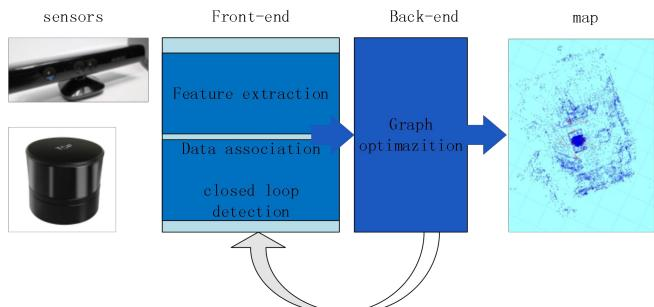
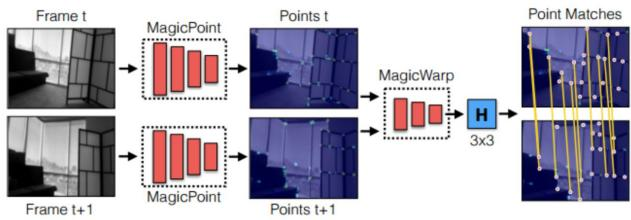
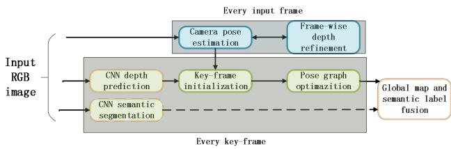

阶段 A · 建立坐标系 / Lesson 0003
机器人 SLAM 综述（2021）：四条演进主线
如果说 2016 年那篇是"宪法"，这一篇就是"年表"。它用很短的篇幅把 SLAM 的三代做法串成一条线，并且在结论里给出四句极好记的演进口号。这一课我们就把这四句口号拆开，逐句讲透。📈
🎯 主题：滤波 → 图优化 → 深度学习的三代对照
🧭 覆盖：EKF-SLAM / PF-SLAM / 图优化 / 深度学习结合
📅 2021 · A Survey of simultaneous localization and mapping for robot
本节目标
读完你应该能：① 写出 EKF-SLAM 的状态向量并说清它为什么贵；② 解释 RBPF 那个因式分解在"省什么"；③ 说出图优化相比滤波的根本优势；④ 复述深度学习进入 SLAM 的两条路径。
和前面课程怎么接
第 0002 课给了你"标准形式化"（MAP → 因子图 → 最小二乘）。本节要回答的正是那个形式化之前的故事：为什么大家最后放弃了滤波、选择了优化 。这个答案会在第 0006 课（LiDAR 里程计综述）与第 0011 课（深度学习 VSLAM）里被反复引用。🔗
1. 先把"四句口号"记住
这篇综述的结论段落写得非常凝练，用一句话总结了 SLAM 这些年的全部进步。我把它拆成四句，因为这四句就是整门课的四条纵轴：
为什么要背这四句
因为后面每一篇论文，你都可以用这四句给它定位：它在推进哪一条轴？ 比如 ORB-SLAM 推进的是"前端→后端"这一轴；VINS-Mono 推进的是"滤波→优化"；SuperGlue / LoFTR 推进的是"手工→学习"；SemanticFusion 推进的是"稀疏→稠密语义"。有了这四根轴，255 篇论文立刻能挂上去。
2. 第一代：EKF-SLAM 与它的两个死穴
原文把滤波方法称作"最早的 SLAM 算法，也是最成熟的算法之一"。它的思路基于贝叶斯公式：先根据控制信息预测下一时刻位姿，再根据观测信息校正位姿。
预测方程与观测方程
式 (1) 是预测方程 ，式 (2) 是观测方程 。$f_i$ 是当前环境中第 $i$ 个特征点，$W_t$ 与 $V_t$ 表示噪声。
位姿 $x_{c\_t}$ 本身是一个 13 维向量：
$r$ 是三维位置（3 维），$q$ 是姿态四元数（4 维），$\nu$ 是速度（3 维），$\omega$ 是角速度（3 维）——加起来恰好 13 维。
⚠️ 这里有个 OCR 错误要提醒你
原文这一句的 Markdown 版本把符号写错了：Q is the velocity and Z is the angular。按上下文与上面的公式（$\nu^T,\omega^T$），正确表述应是 $\nu$ 是速度，$\omega$ 是角速度 。这是 PDF 转 Markdown 时把希腊字母认成了拉丁字母。本课程按正确形式讲，也提醒你：读自动转换的论文文本时，希腊字母是最容易被认错的地方 。
为什么 EKF-SLAM 越来越慢：状态向量与协方差矩阵
EKF-SLAM 的状态向量同时装下机器人位姿和环境特征点 ：
而它的协方差矩阵 $\Sigma$ 长这样：
请你盯着这个矩阵看十秒。 它的维度是 $(13+3n)\times(13+3n)$，其中 $n$ 是地图里的特征点数。机器人往前走，$n$ 不断增大，这个矩阵按平方增长 。原文的原话是：$\Sigma$ 占用的内存会"急剧增加"，严重消耗计算机内存资源。
原文还点出第二个死穴：式 (1) 和式 (2) 都是非线性方程，必须线性化，而线性化必然引入系统误差。
死穴一：线性化误差
EKF 用一阶泰勒展开把非线性函数拉直。拉直就意味着：越偏离线性化点，误差越大。而且这个误差会系统性地 积累，不是零均值噪声。
死穴二：平方级复杂度
协方差矩阵 $\Sigma$ 随特征点数按平方膨胀。维护"所有特征点两两之间的相关性"，是 EKF-SLAM 最贵的地方。
关键洞察：相关性就是成本
后面两种改进（局部地图、部分解耦）做的其实是同一件事——想办法把 $\Sigma$ 的非对角块变少甚至清零 。记住这句话，你就理解了整个滤波路线的技术主线。
两条著名的改进路线
改进一：局部地图（Bo Zheng 等）。 根据观测到的特征点先生成若干局部地图 ；机器人持续运动，局部地图的特征点逐渐增多；当数量超过某个阈值时，就把它与全局地图合并，然后重新初始化局部地图。相比传统 EKF-SLAM，这显著降低了计算复杂度、提升了速度。
改进二：只对特征点用卡尔曼滤波（Dryanovski 等）。 这一招更精彩。做法是：用 RGB-D 相机提取二维特征点，结合深度信息得到稀疏三维特征点云；然后用 ICP 算法求当前帧点云与三维特征地图之间的变换，从而得到当前位姿。卡尔曼滤波只用来更新地图中特征点的位置，不再用来估计机器人位姿。
为什么这一招有效？
因为一旦"位姿估计"从卡尔曼滤波里拿出来，式 (4) 中的 位姿与特征点不再耦合，多个特征点之间也不再有相关性 ——于是协方差矩阵 $\Sigma$ 退化成对角矩阵 ！原文给出的结果是：该算法在 CPU 上单线程处理速度可达 30 Hz ，满足实时 SLAM 的需求。
请体会这个思路：不是把算法优化得更快，而是重构问题结构，让昂贵的部分根本不需要存在。 这种"降低耦合度"的思路，后面在 FAST-LIO2 去掉特征提取、KISS-ICP 去掉 IMU 时会再次出现。
3. 粒子滤波与那个漂亮的因式分解
PF-SLAM 用一组带权粒子 来表示后验概率分布 $p(x_{1:t}, m \mid z_{1:t}, u_{1:t-1})$（其中 $m$ 是地图）。每个粒子代表机器人一条可能的位姿轨迹，并携带对应的环境地图。原文指出：当粒子数足够多时，粒子滤波可以表示任意概率密度函数。
为降低复杂度，Rao-Blackwellized 粒子滤波（RBPF） 把"位姿估计"与"地图估计"拆开：
读懂式 (5)：为什么这个等号值钱
左端是"位姿和地图一起估"，联合分布的维度极高。右端把问题拆成两块：先把位姿轨迹估出来，再在已知轨迹的前提下估地图 。之所以能这么拆，是因为给定轨迹后，地图估计变成了一个"已知位姿的建图问题"——而这个问题每个粒子都可以用一个卡尔曼滤波独立解掉，非常便宜。
一句话：它把"高维联合估计"换成了"高维边缘估计 + 一堆低维条件估计"。
PF-SLAM 由四步构成：采样（sampling）、权重计算（weight calculation）、重采样（resampling）、地图估计（map estimation） 。前三步都是粒子滤波在估位姿。
粒子滤波的根本两难
原文对这个缺点的表述非常直白：粒子数多，计算复杂度就相应增加；粒子数少，算法精度就下降。 此外重采样过程还会产生粒子耗尽（particle depletion） 问题——也就是多样性丢失，所有粒子退化成同一个。
Grisetti 的改进（三件套）
① 提出计算精确提议分布 的方法——不只看机器人运动，还考虑最近观测，从而大幅降低预测步的位姿不确定性；② 提出选择性重采样 ，显著缓解粒子耗尽。这是后面 Cartographer / Gmapping 类系统的基础。
Hone He 的混合方案
用粒子滤波算位姿、用 EKF 估地图 。降低了计算复杂度、鲁棒性好。原文给出的量化结果：误差范围从 0.5 m 降到 0.2 m 。
为什么滤波路线最终被超越
原文的关键一句：卡尔曼滤波与粒子滤波都只能估计机器人当前时刻的位姿，很难获得全局一致的位姿与地图。 这句话直接引出了第三章——图优化。
4. 第二代：图优化，以及它为什么"更全局"
原文开门见山：基于图优化的 SLAM 是当前最常见的 SLAM 算法。 它包含三步：

原图注（Fig. 1）： Overview of graph-based SLAM（基于图优化的 SLAM 总览）。
怎么看这张图： 这是整门课最该先记住的"系统骨架图"。请顺着箭头走一遍——图像 → 特征点提取与描述子 → 帧间匹配 → 得到位姿序列（这就是视觉里程计）→ 随时间累积误差越来越大 → 当机器人回到走过的地方时触发回环检测 → 后端图优化把位姿整体重排 → 把每帧观测变换到全局坐标系得到一致地图。 第 0002 课讲的前端/后端、短期/长期数据关联，在这里变成了具体的三步。
三步各自在干什么
① 前端帧间估计
提取特征点与描述子（常用 SIFT / ORB / SURF ），匹配两帧之间的特征点对，估计帧间位姿变换，得到不同时刻的位姿 $x_{1\dots t}$。
② 回环检测
随时间推移，视觉里程计的累积误差逐渐增大 。当机器人回到曾经到过的位置时，做回环检测，产生一条跨越很长时间的约束。
③ 后端图优化
根据前端结果与回环结果，优化机器人位姿以获得全局一致的位姿 ；再把每帧观测量变换到全局坐标系，得到全局一致的地图。
正文点名的三个工作，各有教学价值
工作 做法 为什么值得注意
Henry 等 用 RANSAC 求两帧 RGB-D 数据的变换矩阵 → 作为 ICP 的初值 → 求深度图（稠密点云）之间的最优变换 → 后端用稀疏捆绑调整 优化位姿
这是"粗配准给初值、精配准再优化 "的经典两段式流程，后面几乎所有点云配准都沿用这个套路。
Endres 等 系统性比较 SIFT / SURF / ORB 等特征算法对 SLAM 在精度与实时性 两方面的影响
结论很有启发：用当前帧与历史多帧匹配能有效降低位姿估计误差，但计算时间相应增加，难以用于实时 SLAM。 精度与实时性是一对永恒的矛盾。
Dryanovski 等 用 Shi-Tomasi 提特征点（兼顾速度与鲁棒性），不生成描述子 ，匹配时直接用 ICP 求变换矩阵
"不提描述子"这个选择值得记住——它牺牲了长基线匹配能力，换来了速度。这条路线的极端版本就是后面的直接法。
原文还提到：g2o 是当前最常用的后端图优化器 。在后端章节（第 0002 课的因子图）你会再见到它。
图优化路线仍然有的三个短板
纹理单一或缺失时，特征点数量少，帧间估计精度低。 （这句话是后面所有"直接法""点线融合""激光辅助视觉"工作的出发点。）特征提取算法是手工选的，而"哪种特征提取算法最好"至今仍有很大争议。 （这句是"学习式特征"的出发点。）生成的地图不含语义信息，限制了机器人导航的性能。 （这句是"语义 SLAM"的出发点。）
请注意这三条的写法
原文在讲完一个方法的优点后，立刻列出它的短板，并且用"当前结合深度学习与 SLAM 的方法在一定程度上解决了上述问题"来收尾过渡 。这是综述写作的标准范式：每一代的缺点，就是下一代的动机。 你在读任何一篇综述时，都该专门去找"它列出的那些缺点"——那是选题的富矿。
5. 第三代：深度学习进入 SLAM 的两条路径
原文把深度学习与 SLAM 的结合分成两方面，这个划分很干净，我建议你直接记下：
路径 A：替换经典 SLAM 的一个或多个模块
可被替换的模块包括：深度信息估计、帧间估计、特征提取 等。也就是"管线不动，换零件"。
路径 B：SLAM 与语义地图结合
用 CNN 获取图像语义信息，与 SLAM 结合得到环境的全局一致语义地图 。原文给的价值描述很具体：机器人不仅能知道物体的位置，还能分别知道每个物体是什么，从而可以被指令去抓取某个物体。
路径 A 的两个代表
代表一：DeTone 等的点跟踪系统。 用两个深度卷积神经网络：第一个 MagicPoint 从单张图像提取二维特征点，第二个 MagicWarp 把 MagicPoint 的输出做匹配。

原图注（Fig. 2）： Deep Point-based Tracking Overview（深度点跟踪总览）。
怎么读这张图： 重点不在网络结构，而在原文强调的那个差异——"它只使用点的位置，而不使用局部点的描述子" 。传统方法是"检测 + 描述 + 匹配"三步，这里把"描述"整个删掉了。而且两个网络只用简单的合成数据训练 ，就能在单核 CPU 上跑到 30 fps 。这条线后来演变成 SuperPoint / SuperGlue 那一族，你会在第 0011 课看到它的完整版。
代表二：UnDeepVO。 一个单目视觉里程计系统，同时估计单目相机的位姿与图像的深度。原文点出它两个鲜明特点：
无监督（unsupervised）深度学习方法。 恢复绝对尺度（absolute scale recovery）。
它怎么做到既单目又有尺度？做法是：用双目图像训练来恢复尺度，然后用连续的单目图像做测试。 训练网络的损失函数基于时间与空间上的稠密信息。基于 KITTI 数据集的实验显示，它的位姿估计比其他单目视觉里程计方法更精确。
这里藏着一个必须点破的概念：单目为什么没有尺度
单目相机只测"方向"不测"距离"。把同一段视频缩小两倍再看，像素位置完全一样——所以单目 SLAM 只能恢复出一个"形状正确但尺寸任意"的结构。UnDeepVO 的妙处在于：用一个能提供尺度的传感器（双目）去训练，再把这个尺度知识"迁移"给单目模型。 "训练时用双目、测试时用单目"这个范式，在后面第 0010 课的监督/自监督分类里会再次出现。
回环检测这边：从 AlexNet 到 NetVLAD
原文梳理了一条很清晰的线索，值得单独讲，因为它回答了一个具体问题：CNN 特征里到底哪一层适合做地点识别？
Sünderhauf 等在 AlexNet 上做实验，评估各卷积层对外观变化、视角变化 的鲁棒性，结论非常具体：
第 3 个卷积层
对外观变化 更鲁棒。（外观变化 = 光照、季节、天气变了）
第 6 层
对视角变化 更鲁棒。（视角变化 = 从不同角度看同一个地方）
这说明什么
不同深度的层编码了不同抽象层次 的信息。浅层保留更多外观/纹理细节，深层更接近语义与结构。所以"用哪一层"取决于你怕哪种变化。
但原文接着指出问题的关键：传统 CNN 主要用于图像分类，直接拿来做回环检测效果并不特别好。 于是视线转向了局部特征聚合方法 VLAD ——它在场景识别中表现更好。Arandjelovic 等把 VLAD 设计成 CNN 的一个新型池化层，得到 NetVLAD ，使它更适合回环检测；实验显示基于 NetVLAD 的重训练算法能显著提升图像匹配精度。
路径 B 的两个代表
Tateno 等（即 CNN-SLAM）： 用 CNN 估计 RGB 图像的深度信息，并对 RGB 图像做语义分割，再与传统 SLAM 结合得到全局语义地图。

原图注（Fig. 5）： CNN-SLAM Overview。
怎么读这张图： 注意原文给的动机——RGB-D 相机与双目相机虽然能直接获得深度，但通常只能在自己传感器的精度范围内得到准确结果，因此很难在室内与室外环境之间无缝切换。 CNN-SLAM 的应对是：用单目相机做大尺度 SLAM，再用深度估计来补上单目缺失的绝对尺度。评估在 LSD-SLAM 的 NYUDv2 与 ICL-NUIM 数据集上完成。这张图的教学价值在于它展示了"学习模块给几何模块补短板 "这种混合架构的雏形——第 0010 课会告诉你，这种混合路线其实才是目前真正的赢家。
Lingni Ma 等： 基于 RGB-D 图像序列做 SLAM 并构建语义地图。用 DVO SLAM 求位姿，用 FuseNet 对单帧 RGB-D 图像做语义分割；得到位姿后，把 RGB-D 序列映射到全局坐标系，再关联多帧图像的重叠部分，从而得到一致的多帧语义分割与语义地图。
这个工作最有价值的一句结论
原文写道：实验结果表明多视角下多帧图像的语义分割结果，比单帧图像更准确 。因此 SLAM 与深度学习得到的语义地图结合对机器人导航有益，而且 SLAM 也让语义分割的结果更准确——两者是互相增益的（mutually complementary）。
请注意这个"双向"的表述：不是"SLAM 用了语义"，而是"SLAM 和语义互相帮对方变得更好"。这是语义 SLAM 最核心的论点，也是它区别于"外挂一个分割器"的关键。第 0012 课会把它展开成完整的谱系。
6. 作者对深度学习的批评（这段很重要）
很多综述在夸完深度学习就结束了。这篇没有。它在同一章里紧接着列出了深度学习的三条硬伤 ，而且说得很直接：
原文的三条批评
① 用深度学习学特征目前缺少清晰的理论指导 ；生成的特征没有直观含义 （no intuitive meaning）；很多训练参数依赖专家经验，训练效果也可能依赖训练数据集。
为什么这三条值得单独拎出来？因为它们不是"工程细节"，而是三类结构性的隐患 ：
批评 翻译成实际风险
缺少理论指导 你无法事先判断一个网络结构在这个场景下是否可行，只能不断试。工程上意味着调参成本高、可预期性差 。 特征没有直观含义 出问题时你无法从特征层面诊断原因。这就是第 0011 课会展开的"黑箱 "问题。 依赖训练数据集 换一个环境（换城市、换天气、换传感器）性能就可能大幅下降，也就是泛化问题 。第 0010 课会给出原文级的证据。
原文也给了深度学习对 SLAM 的反哺 ：SLAM 得到的全局一致地图与帧间关系，可以为深度学习提供"图像到图像关联"的数据集。这是个很漂亮的闭环论点——两者互相供给训练信号 。
互动判断
按本节内容，如果把 EKF-SLAM 的协方差矩阵变成对角矩阵，本质上是在假设什么？
假设传感器噪声比原来更小
假设位姿与特征点之间、以及特征点彼此之间互不相关
假设地图里的特征点数量不会增加
课后练习
请解释：为什么"粒子数太少会导致精度下降，太多又会算不动"这个两难，在 RBPF 里尤其严重？
展开查看答案
因为 RBPF 里每个粒子都携带一份独立的环境地图 。所以粒子数不只是"并行采样几条轨迹"的关系，而是"要维护几份地图"。粒子数增加时，内存与计算量的增长比普通粒子滤波更陡。也正因如此，Grisetti 的改进把重点放在"如何用更少的粒子达到同样精度"——具体手段是改进提议分布（把最近的观测也纳入，从而让粒子落在更合理的位置）以及选择性重采样（只在必要时重采样，避免多样性被磨掉）。
为什么"滤波方法只能估计当前时刻位姿"这一点，会导致它难以获得"全局一致"的位姿与地图？
展开查看答案
因为滤波是递归 + 边缘化 的：每走一步，旧状态就被积分掉（marginalize out）了。一旦被边缘化，历史位姿就无法再被单独修正——它已经被压进了当前时刻的协方差里。于是当检测到一个跨越很久的回环时，滤波框架只能"在此刻打一个补丁"，而无法把这条约束传回去重排整条轨迹。图优化恰恰相反：它把所有 历史位姿都保留为可优化变量，回环只是一条额外的边，因此能一次性重排全局。这就是"全局一致"的来源。
本节说 Sünderhauf 的结论是"第 3 层对光照/外观变化更鲁棒，第 6 层对视角变化更鲁棒"。请你推测一下这个现象背后的直觉。
展开查看答案
浅层卷积感受野小、保留更多低级纹理与颜色对比信息，因此对"整体亮度/色调变化"更不敏感？其实更准确的说法是：浅层特征更局部、更依赖纹理细节，因此当视角 变化不大时它抓住的外观线索依然有效；而深层特征感受野大、更抽象，编码了更大范围的空间结构关系，因此当视角 变化导致局部纹理错位时，它仍然能保持稳定。要注意这是原文的实验结论，具体机制属于经验性观察，不宜过度推广——这也正好呼应了原文"缺少清晰理论指导"的批评。
请用"每一代的缺点就是下一代的动机"这个范式，重新叙述本节的三代演进。
展开查看答案
① 滤波代：能实时、理论成熟，缺点是线性化误差 + 平方级内存 + 只能估当前时刻 → 因此走向图优化（保留全部历史位姿、可全局重排）。